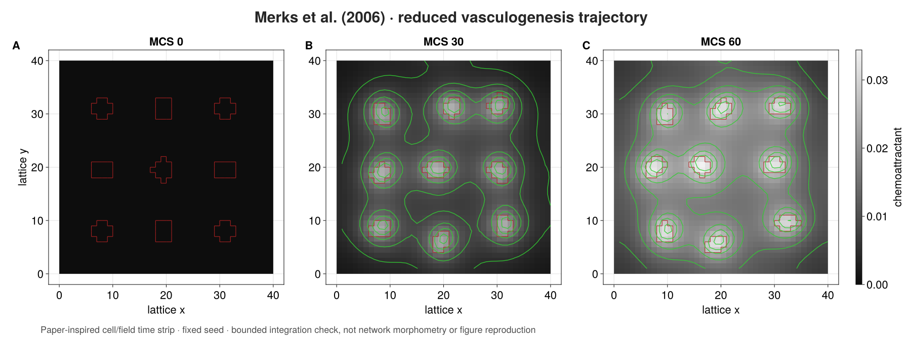

Merks 2006
Content class: qualified source-bounded case study. Support level: qualified unpublished internal beta.
Outcome. Assemble the reduced Merks vasculogenesis mechanism from ordinary PottsToolkit declarations and an explicit multirate ProcessBigraph coupling CPM, secretion, diffusion, decay, and typed observations.
Prerequisites. Adapters and solvers, write components, and Cellular Potts concepts.
Source, ambiguity trace, and profiles
Source: Merks et al. (2006), DOI 10.1016/j.ydbio.2005.10.003. The trace covers equations 3–6 and the explicit software choices for periodic field boundaries, Moore local-connectivity rejection, and deterministic nonoverlapping placement.
| Choice | Canonical profile | Executed docs profile |
|---|---|---|
| Domain | 500×500 | 20×20 |
| Cells | 282 | 2 |
| Initially occupied sites | 28,200 | 10 |
| Target area | 100 | 5 |
| Target length | 50 | 5 |
| Temperature | 50 | 50 |
| Chemotaxis γ | 1000 | 1000 |
| Field subcycles / MCS | 15 | 15 |
| Horizon | bounded qualification | 2 MCS |
| Seed | declared canonical | 11 |
The high-level biological model is shared exactly; domain, population, targets, runtime, and seed are intentional documentation reductions.
Complete executed source
The following is the entire program. No reference-model constructor or hidden scientific setup is used.
using PottsToolkit
using OrdinaryDiffEqTsit5: Tsit5
import CorePotts
import ProcessBigraphs as PB
import SciMLBase
const MERKS_SOURCE_DOI = "10.1016/j.ydbio.2005.10.003"
const MERKS_SEMANTIC_VERSION = "2.0.0"
profile = (
identity=:reduced_docs_cpu,
dimensions=(20, 20),
cells=2,
central_extent=16,
target_area_sites=5.0,
target_length_sites=5.0,
temperature=50.0,
chemotaxis_gamma=1000.0,
volume_strength=50.0,
source_length_strength=5.0,
secretion_rate=1.8e-4,
diffusion=0.1,
decay=1.8e-4,
subcycles_per_mcs=15,
mcs=2,
seed=UInt64(11),
)
cell = CellType(:endothelial)
extracellular = Medium(:extracellular_matrix)
border = Medium(:border)
chemoattractant = Field(
:chemoattractant;
placement=CellCentered(),
boundary=PeriodicField(),
interpolation=Nearest(),
)
moore = CorePotts.MooreTopology{2}()
spatial_roles = CorePotts.SpatialRoles(
proposal=CorePotts.static_relation(CorePotts.ProposalRole(), moore),
contact=CorePotts.static_relation(CorePotts.ContactRole(), moore),
surface=CorePotts.static_relation(CorePotts.SurfaceRole(), moore),
connectivity=CorePotts.static_relation(CorePotts.ConnectivityRole(), moore),
query=CorePotts.static_relation(CorePotts.SpatialQueryRole(), moore),
)
potts_model = PottsModel(
cell,
extracellular,
border,
Volume(
cell => (
target=profile.target_area_sites,
strength=profile.volume_strength,
),
),
Elongation(
cell => (
target=profile.target_length_sites / 4,
strength=16 * profile.source_length_strength,
);
target_division=CloneOnDivision(),
),
Adhesion(PairwiseLaw(
:contact_energy,
(cell, cell) => 40.0,
(cell, extracellular) => 20.0,
(cell, border) => 100.0,
(extracellular, extracellular) => 0.0,
(extracellular, border) => 0.0,
(border, border) => 0.0,
)),
chemoattractant,
Chemotaxis(
chemoattractant,
cell => profile.chemotaxis_gamma / profile.temperature;
response=LinearResponse(),
mode=ExtensionChemotaxis(),
),
LocalConnectivity(),
spatial_roles,
)
function initial_merks_labels(profile)
labels = zeros(UInt64, profile.dimensions)
grid_width = ceil(Int, sqrt(profile.cells))
lower = ntuple(axis ->
fld(profile.dimensions[axis] - profile.central_extent, 2) + 1, 2)
spacing = profile.central_extent / grid_width
radius = sqrt(profile.target_area_sites / pi)
identity = 0
for gy in 1:grid_width, gx in 1:grid_width
identity == profile.cells && break
identity += 1
center = (
lower[1] - 1 + (gx - 0.5) * spacing,
lower[2] - 1 + (gy - 0.5) * spacing,
)
bound = ceil(Int, radius) + 1
xbounds = (
max(1, floor(Int, center[1]) - bound):
min(profile.dimensions[1], ceil(Int, center[1]) + bound)
)
ybounds = (
max(1, floor(Int, center[2]) - bound):
min(profile.dimensions[2], ceil(Int, center[2]) + bound)
)
candidates = [
CartesianIndex(x, y) for y in ybounds for x in xbounds
]
sort!(candidates; by=site -> (
sum((site[axis] - center[axis])^2 for axis in 1:2),
Tuple(site),
))
for site in candidates[1:round(Int, profile.target_area_sites)]
iszero(labels[site]) ||
throw(ArgumentError("initial cells overlap"))
labels[site] = UInt64(identity)
end
end
labels
end
labels = initial_merks_labels(profile)
initial_field = zeros(Float64, profile.dimensions)
field_scale = PB.TimeScale(2, 1, :second)
field_problem = PB.BoundedCartesianFieldProblem(
"merks-chemoattractant",
initial_field;
spacing=(2.0, 2.0),
diffusion=profile.diffusion,
decay=profile.decay,
tick_duration=2.0,
time_scale=field_scale,
)
field_declaration = PB.sciml_field_declaration(
field_problem,
Tsit5();
algorithm_id="ordinarydiffeq-tsit5",
solver_options=(abstol=1.0e-9, reltol=1.0e-9),
)
field_process = PB.managed_field_process(
field_declaration;
resource_authorization=(
backend=:cpu,
precision=:float64,
residency=:host,
),
subcycles_per_mcs=profile.subcycles_per_mcs,
)
function merks_problem(
potts_model, cell, chemoattractant, profile, labels, field, mcs)
identities = Tuple(
id => cell for id in sort!(collect(Set(filter(!iszero, labels))))
)
PottsProblem(
potts_model,
CartesianDomain(
profile.dimensions;
spacing=(1.0, 1.0),
boundaries=(
AxisBoundary(ClosedBoundary()),
AxisBoundary(ClosedBoundary()),
),
),
Layout(LabelledCells(labels, identities));
fields=(chemoattractant => field,),
capacity=profile.cells,
tspan=(mcs - 1, mcs),
seed=profile.seed,
)
end
function logical_labels(state, dimensions)
labels = zeros(UInt64, dimensions)
for site in eachindex(labels)
owner = CorePotts.owner_at(state, site)
labels[site] = CorePotts.is_cell_owner(owner) ?
UInt64(CorePotts.value(CorePotts.cell_id(owner))) : UInt64(0)
end
labels
end
struct MerksCPMStep{M,C,F,P} <: PB.AbstractStep
model::M
cell::C
field::F
profile::P
end
PB.ports(::MerksCPMStep) = (
PB.PortSpec(Array{UInt64,2}, :labels, :input;
interval_behavior=:event_updated),
PB.PortSpec(Array{Float64,2}, :mcs_field, :input;
interval_behavior=:event_updated),
PB.PortSpec(Array{UInt64,2}, :labels_out, :output;
update_law=:replace),
)
PB.semantic_version(::MerksCPMStep) = MERKS_SEMANTIC_VERSION
PB.semantic_parameters(step::MerksCPMStep) = (
family=:Merks2006,
source_doi=MERKS_SOURCE_DOI,
profile=step.profile.identity,
potts_fingerprint=semantic_fingerprint(step.model).digest,
)
function PB.invoke(step::MerksCPMStep, inputs, context)
mcs = Int(div(context.end_time.tick, step.profile.subcycles_per_mcs))
experiment = merks_problem(
step.model,
step.cell,
step.field,
step.profile,
inputs[:labels],
inputs[:mcs_field],
mcs,
)
integrator = SciMLBase.init(
experiment,
SequentialCPM(temperature=step.profile.temperature),
)
SciMLBase.step!(integrator)
updated = logical_labels(
CorePotts.logical_state(integrator),
step.profile.dimensions,
)
PB.InvocationResult((
PB.emit(context, :labels_out, PB.ReplaceUpdate(), updated),
); diagnostics=(
mcs,
accepted_copies=CorePotts.current_mcs_report(integrator).accepted_copies,
))
end
struct MerksSecretion <: PB.AbstractStep
rate::Float64
end
PB.ports(::MerksSecretion) = (
PB.PortSpec(Array{UInt64,2}, :labels, :input;
interval_behavior=:event_updated),
PB.PortSpec(Array{Float64,2}, :forcing, :output;
update_law=:replace),
PB.PortSpec(Array{Float64,2}, :decay_weights, :output;
update_law=:replace),
)
PB.semantic_version(::MerksSecretion) = MERKS_SEMANTIC_VERSION
PB.semantic_parameters(step::MerksSecretion) = (
family=:Merks2006,
source_equation=6,
secretion_rate=step.rate,
)
function PB.invoke(step::MerksSecretion, inputs, context)
labels = inputs[:labels]
forcing = map(label -> iszero(label) ? 0.0 : step.rate, labels)
decay_weights = map(label -> iszero(label) ? 1.0 : 0.0, labels)
PB.InvocationResult((
PB.emit(context, :forcing, PB.ReplaceUpdate(), forcing),
PB.emit(context, :decay_weights, PB.ReplaceUpdate(), decay_weights),
))
end
forcing = map(
label -> iszero(label) ? 0.0 : profile.secretion_rate,
labels,
)
decay_weights = map(label -> iszero(label) ? 1.0 : 0.0, labels)
composite_model = PB.compose(
:Merks2006;
scale=field_scale,
profile=:reproducible,
) do system
label_store = PB.store!(system, :labels, PB.LeafSchema(
UInt64; shape=profile.dimensions, default=labels,
update_law=:replace, ontology="CPM cell identity"))
field_store = PB.store!(system, :field, PB.LeafSchema(
Float64; shape=profile.dimensions, default=initial_field,
update_law=:replace, units="concentration"))
mcs_field_store = PB.store!(system, :mcs_field, PB.LeafSchema(
Float64; shape=profile.dimensions, default=initial_field,
update_law=:replace, units="concentration"))
forcing_store = PB.store!(system, :forcing, PB.LeafSchema(
Float64; shape=profile.dimensions, default=forcing,
update_law=:replace, units="concentration/second"))
decay_store = PB.store!(system, :decay_weights, PB.LeafSchema(
Float64; shape=profile.dimensions, default=decay_weights,
update_law=:replace))
field = PB.mount!(system, :field_solver, field_process)
PB.attach!(system, field, (
field=field_store,
forcing=forcing_store,
decay_weights=decay_store,
field_out=field_store,
mcs_field=mcs_field_store,
))
PB.schedule!(system, field, PB.Every(PB.Duration(1, field_scale)))
cpm = PB.mount!(
system,
:cellular_potts,
MerksCPMStep(potts_model, cell, chemoattractant, profile),
)
PB.attach!(system, cpm, (
labels=label_store,
mcs_field=mcs_field_store,
labels_out=label_store,
))
secretion = PB.mount!(
system,
:secretion_mask,
MerksSecretion(profile.secretion_rate),
)
PB.attach!(system, secretion, (
labels=label_store,
forcing=forcing_store,
decay_weights=decay_store,
))
PB.schedule!(system, secretion, PB.After(cpm))
PB.observable!(system, :labels, label_store)
PB.observable!(system, :field, field_store)
end
struct MerksSummary <: PB.AbstractObserver
subcycles_per_mcs::Int
end
PB.observer_semantic_version(::MerksSummary) = MERKS_SEMANTIC_VERSION
PB.observer_semantic_parameters(observer::MerksSummary) = (
family=:Merks2006,
subcycles_per_mcs=observer.subcycles_per_mcs,
)
function PB.observe(observer::MerksSummary, projection, context)
labels = projection[PB.path("labels")]
field = projection[PB.path("field")]
PB.ObservationResult((
mcs=Int(div(context.time.tick, observer.subcycles_per_mcs)),
cells=length(Set(filter(!iszero, labels))),
occupied=count(!iszero, labels),
field_mass=sum(field),
field_minimum=minimum(field),
field_maximum=maximum(field),
))
end
observer = PB.ObserverSpec(
"merks-state-summary",
MerksSummary(profile.subcycles_per_mcs),
(PB.path("labels"), PB.path("field")),
PB.PeriodicObservationSchedule(
PB.Duration(profile.subcycles_per_mcs, field_scale),
);
record_schema=PB.RecordSchema(
NamedTuple; identity="merks-state-summary-v2"),
)
runtime = PB.initialize_runtime(
PB.compile(composite_model),
PB.SerialExecutor(
root_seed=profile.seed,
observation_plan=PB.ObservationPlan((observer,)),
),
)
horizon = PB.LogicalTime(
profile.mcs * profile.subcycles_per_mcs,
field_scale,
)
PB.run_until!(runtime, horizon)
records = Tuple(record.payload for record in PB.observation_records(runtime))
result = (
final=last(records),
model_fingerprint=semantic_fingerprint(potts_model).digest,
composite_fingerprint=PB.semantic_fingerprint(composite_model),
source_doi=MERKS_SOURCE_DOI,
)
@assert length(records) == profile.mcs
@assert 0 < result.final.cells <= profile.cells
@assert result.final.occupied > 0
@assert result.final.field_mass > 0
@assert result.final.field_minimum >= 0Precompiling packages...
2497.0 ms ✓ FunctionWrappersWrappers
1465.1 ms ✓ RespecializeParams
10095.6 ms ✓ SciMLBase
774.9 ms ✓ SciMLBase → SciMLBaseDifferentiationInterfaceExt
1031.1 ms ✓ SciMLBase → SciMLBaseStaticArraysExt
3309.5 ms ✓ ProcessBigraphs → ProcessBigraphsSciMLExt
3725.0 ms ✓ SciMLJacobianOperators
8318.6 ms ✓ NonlinearSolveBase
1195.8 ms ✓ NonlinearSolveBase → NonlinearSolveBaseSparseArraysExt
11210.1 ms ✓ CorePotts
2723.8 ms ✓ BracketingNonlinearSolve
3133.4 ms ✓ DiffEqBase
1126.0 ms ✓ DiffEqBase → DiffEqBaseSparseArraysExt
4441.1 ms ✓ OrdinaryDiffEqCore
1226.2 ms ✓ OrdinaryDiffEqCore → OrdinaryDiffEqCoreSparseArraysExt
6665.6 ms ✓ OrdinaryDiffEqTsit5
34443.4 ms ✓ PottsToolkit
17 dependencies successfully precompiled in 79 seconds. 160 already precompiled.State, trace, and inspection loop


Text alternative for the animation: thirteen native MakiePotts states sample a fixed-seed 40 × 40, nine-cell visualization profile every 5 MCS through MCS 60. Red cell boundaries remain visible over the grayscale chemoattractant field; green contours reveal the evolving local and shared field structure. Reduced-motion users receive the three-panel MCS 0/30/60 time strip. The executed two-MCS program above remains the compact, fully displayed tutorial and typed-record authority. This longer profile is a paper-inspired mechanism visualization, not a reproduction of the paper’s lacuna, branch-length, or ensemble morphometry.
What this establishes
The displayed program establishes:
- explicit volume, elongation, adhesion, field, chemotaxis, local-connectivity, and Moore spatial-role declarations;
- deterministic nonoverlapping placement for the reduced two-cell profile;
- explicit stores and wiring for labels, field, MCS-visible field, forcing, and decay weights;
- a real Tsit5 field adapter with visible tolerances and CPU authorization;
- 15 field publications per CPM step, followed by secretion-mask refresh;
- typed cell-count, occupied-site, and field-range/mass observations; and
- exact Potts semantic identity and fixed-seed bounded outputs with the packaged reduced Merks model.
The CPM is stochastic. Exact equality here means that the displayed and packaged assemblies use the same seed, MCS clock, initial state, and solver path. It is not evidence that one trajectory characterizes the output distribution.
What this does not establish
It does not reproduce Figure 5, perform morphometry, estimate an ensemble or distribution, validate the canonical 500×500/282-cell run from this page, establish physical time calibration, prove solver independence, or imply source-author endorsement. In this small fixed-seed trajectory, one initially five-site identity has no occupied sites by MCS 2; that observation is not a cell-survival conclusion.
Material defaults. Every scientific and execution value appears in profile, the field declaration, or the explicit CPM algorithm call.
Expected result. Two typed observations; cell counts 2 then 1; occupied site counts 5 then 1; increasing, nonnegative field mass; and stable model/composite identities for seed 11.
Backend / runtime / seed. CPU/Float64/host; 30 field ticks = 2 bounded MCS; seed 11.
Reproduction command. julia --project=lib/ProcessBigraphs/docs lib/ProcessBigraphs/docs/models/case_studies/merks_2006.jl
Full qualification command. julia --project=. -e 'using Pkg; Pkg.test("PottsToolkit")'
Next step. Audit engines and compute ownership or return to the case-study boundary.